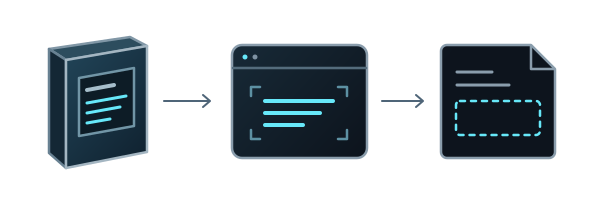

Professional experience / GenAI evaluation
The missing ingredient list
The system could read the ingredients on a package and still approve a product whose saved record had lost them. I followed the text from the original photo to the record a reviewer had to judge.

- 01 / Package photoIngredients visible
- 02 / ExtractionText recognized
- 03 / Saved recordIngredient text missing
01 / Investigation
What survived the save?
I compared saved product records with the original package photos. In one case, the system had extracted the ingredient list, but the text was gone by the time it saved the record. Approval was still possible.
That comparison also exposed errors in the expected answers. When a photo showed that a test expectation was wrong, I corrected it and versioned the change with the test data.
02 / My contribution
Keeping the source with the field
I traced the missing text into the product code. I contributed backend changes that preserved the evidence for extracted fields and UI changes that showed reviewers where each value came from.
03 / Outcome
What changed for reviewers
Reviewers could now see the source behind an extracted value when deciding whether the evidence supported it. When there wasn’t enough evidence to justify approval, I recommended sending the item for human review.